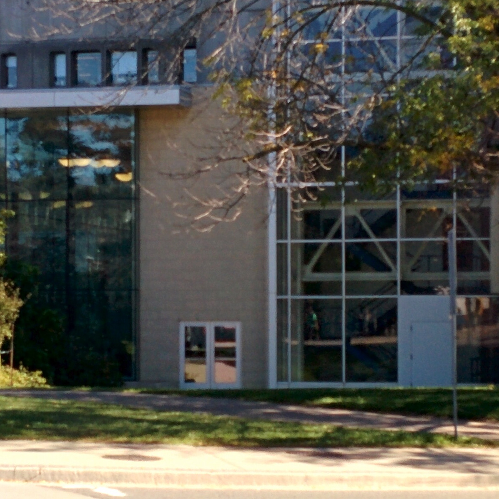
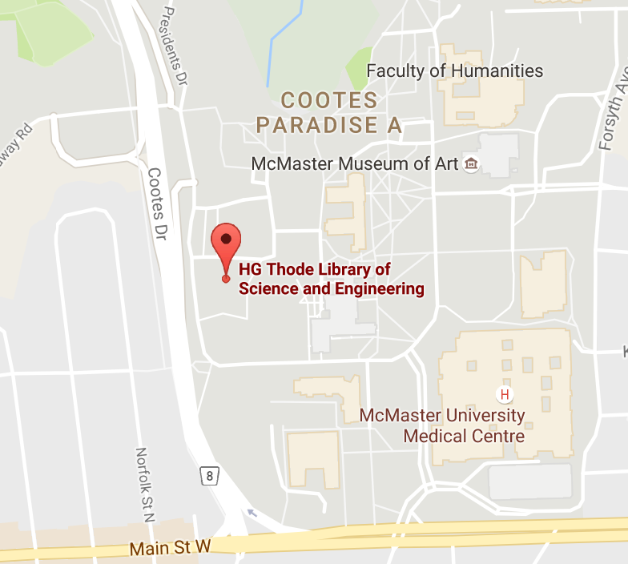
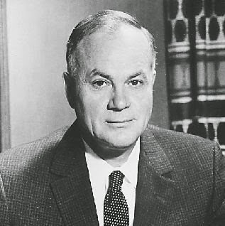

Back to results
Health Sciences Library
 

jack91
Great study area!
I come here all the time when studying for finals. There are lots of seats, and the library is always quiet. You can grab a coffee from one of the two Williams shops.